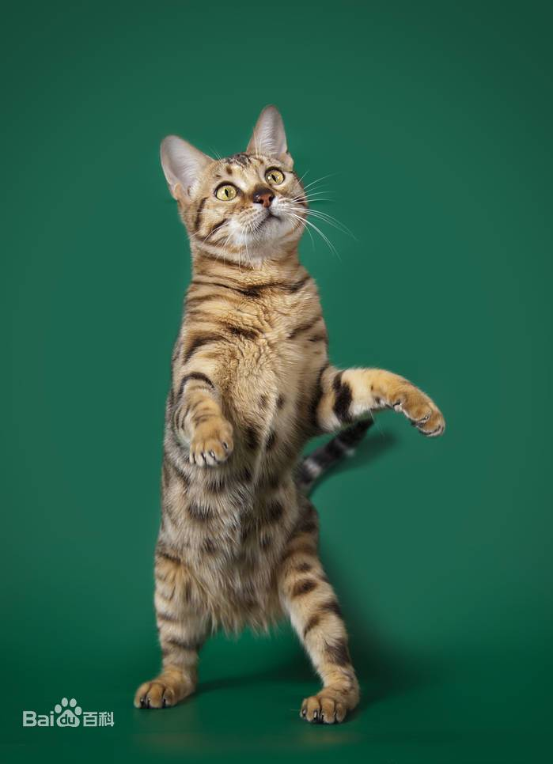

| 名称 | 介绍 | 描述 |
|---|---|---|
| 孟加拉猫 | 有亚洲豹猫（狸猫）的血统，是猫中最名贵的一种，一般可以卖到5.6万。概述：原产：美国祖先：亚洲豹猫交叉配种起源：1963年重量：5.5～9kg 中型到大型。长而强壮。骨架结实。短被毛。头：颇大，带圆弧轮廓。长大于宽。前额到鼻梁处有柔和的曲线过渡。高起而明显的脸颊。丰满而宽的 吻部。大而宽的鼻微带凹曲线。颌很明显。耳：中小型，基部宽，耳尖圆，向前倾。耳尖不能有猞猁状簇毛。眼：大，椭圆形，间距大，眼梢微微向 耳基部倾斜。除了蓝色和浅绿色，所有的颜色都可接受。颈：长，粗，肌肉发达，强有力。长度和身体长度成比例。身体：长，大型，强有力，但并 非东方型身体。骨骼粗壮，肌肉有力。腿和爪：腿的长度中等。后腿稍微长于前腿。骨骼强壮粗大。大而圆的爪。黑色的足垫。尾：中等长度，粗， 向尾尖逐渐变细，尾尖呈圆形。被毛：短而细腻。浓厚，好话，异常柔软。颜色包括：黑色（未被承认）；啡虎斑（底色有深浅之分）；银虎斑 （未被承认）；白雪猫（猞猁色点猫Lynx-point/水貂猫Mink-point）是较浅的斑点或花岗岩纹，蓝眼（水貂猫绿眼，水貂猫未被承认）。 |
 |